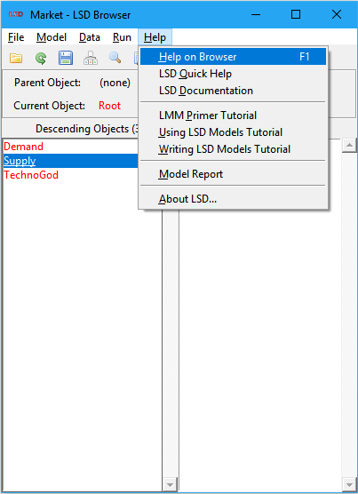

LSD Browser – Menu Help
|
 |
3. Model Report 4. About LSD |
The Help menu contains three groups of entries, the first two offering useful entry points to the LSD documentation, while the third reports all the cross-references between Objects, Parameters and Variables, including the Equations' code.
|
▲Top |
LSD documentation recommended entry points:
Shortcut: F1.
Show the main help page on the LSD Browser in the configured web browser. If the browser is already open, the help page may show as an additional window or tab, according to the web browser configuration.
From any help page you can navigate the entire LSD documentation using the top navigation bar.
Open the brief help on many LSD concepts, commands, and on how to understand and fix LSD model problems, in the configured web browser. If the browser is already open, the help page may show as an additional window or tab, according to the web browser configuration.
Access the LSD documentation in the configured web browser. If the browser is already open, the help page may show as an additional window or tab, according to the web browser configuration.
The LSD documentation provides access to an extensive set of help pages, covering every aspect of LSD model creation and usage. The help pages are necessary to fully exploit LSD, and users are encouraged to make use of the manual pages while learning and using LSD.
Generally speaking, the LSD help pages are structured as a hyper-textual documents where each element related to LSD operation has a section devoted to it, answering questions like "What does this mean?" or "How do I use this?". Each section is filled with links to related sections. LMM and LSD help pages are organized according to the menus where the commands appear. Each help page begins with the picture of the respective interface and contains the full list of the commands available. From any help page you can navigate the entire LSD documentation using the top navigation bar.
|
▲Top |
LSD tutorials for newcomers, in increasing level of detail:
LSD absolute new users are strongly recommended to do this first tutorial, covering the very basic operations and concepts of LMM and LSD. It guides first-time users to open LMM, explore its basic components and test the running of the example models available in the LSD installation.
The second tutorial is targeted on LSD users willing to learn, use and test existing LSD models, provided by the models’ authors. It presents the main steps to start using LSD models for practical purposes.
The third tutorial offers an introduction to users planning to develop their own LSD models or modify existing ones. It is organized as a step-by-step guide on the creation of a simple LSD simulation model.
|
▲Top |
Open the hyper-textual report of the model in the configured web browser, listing Objects, Parameters and Variables in tables ordered according to the model structure. If the report was not created yet, the user will be requested to do so.
Model reports are generated using the Model>Create Model Report command in the LSD Browser menu. Note that the user is responsible to regenerate the model report when its structure is changed, to make sure the presented information is accurate.
|
▲Top |
Present technical details about the LSD model program, the computer platform in use, the operating system and the Tcl/Tk support libraries. It can be useful when reporting bugs or diagnosing compatibility problems.
|
▲Top |